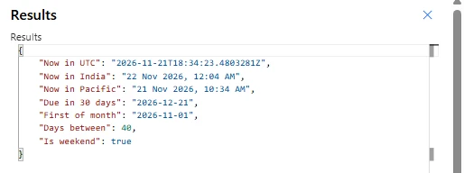

- Power Automate
- Level 2 · Working with data · 4 of 7
Dates, times and time zones
Power Automate works in UTC. That's the most important fact about dates in flows: unless you convert, a flow running late in the evening in India already thinks it's the next day.
One run, three clocks
2026-11-21T18:34Z.The same moment, three ways
| Clock | Value | Expression |
|---|---|---|
| UTC (the flow's clock) | 2026-11-21T18:34Z | utcNow() |
| India (UTC +5:30) | 22 Nov 2026 12:04 AM | convertFromUtc(…, 'India Standard Time', …) |
| Pacific (UTC −8) | 21 Nov 2026 10:34 AM | convertFromUtc(…, 'Pacific Standard Time', …) |
In India it's already the next day. A report that used UTC would show the wrong date.

Converting to local time
convertFromUtc(utcNow(), 'India Standard Time', 'dd MMM yyyy, hh:mm tt')| Piece | What it does |
|---|---|
utcNow() | The current moment, in UTC. |
'India Standard Time' | The target zone, by its Windows name (not IST or UTC+5:30). |
'dd MMM yyyy, hh:mm tt' | Optional format: 22 Nov 2026, 12:04 AM. |
| Format code | Means | Example |
|---|---|---|
yyyy / MM / dd | year / month / day | 2026 / 11 / 21 |
MMM / MMMM | short / full month | Nov / November |
dddd | day name | Saturday |
HH / hh + tt | 24-hour / 12-hour + AM/PM | 18 / 06 PM |
mm | minutes (small m) | 34 |
Use convertTimeZone(value, 'UTC', 'Pacific Standard Time') when the source isn't UTC, or the Convert time zone action if you prefer drop-downs.
Date maths
Date functions with the demo's results
| Expression | Result |
|---|---|
formatDateTime(addDays(utcNow(), 30), 'yyyy-MM-dd') | 2026-12-21 |
startOfMonth(utcNow(), 'yyyy-MM-dd') | 2026-11-01 |
dayOfWeek(utcNow()) | 0 = Sunday … 6 = Saturday |
addDays(value, -7) | a week earlier |
Days between two dates
ticks('2026-12-31') and ticks('2026-11-21'): dates as big numberssub(a, b): the difference in ticksdiv(…, 864000000000): ticks per day → 40div(sub(ticks('2026-12-31T00:00:00Z'), ticks('2026-11-21T00:00:00Z')), 864000000000)| Piece | What it does |
|---|---|
ticks(date) | 100-nanosecond steps since year 1. |
864000000000 | Ticks in one day. |
Working days and Excel dates

Counting working days with Filter array
range(0, 14) → day numbers 0 … 13addDays('2026-11-23', item()) → each datedayOfWeek is not 0 (Sun) and not 6 (Sat)?length(…) of what's left → 10From: range(0, 14)
Where: and(not(equals(dayOfWeek(addDays('2026-11-23', item())), 0)),
not(equals(dayOfWeek(addDays('2026-11-23', item())), 6)))Excel stores dates as days counted from 30 December 1899, so 46348 arrives as a number:
formatDateTime(addDays('1899-12-30', 46348), 'yyyy-MM-dd')| Piece | What it does |
|---|---|
addDays('1899-12-30', 46348) | Counts that many days from Excel's start. |
formatDateTime(..., 'yyyy-MM-dd') | Shows 2026-11-22. A decimal part is the time of day; use int() for the date only. |
Watch out
- Capital
MMis month; smallmmis minutes. - Convert to local time only for display, at the end. Compare and calculate in UTC.
- Holidays: keep them in a list and add a third check to the working-day filter.
New to this? Start from the basics optional
UTC: the world's reference clock. India is 5 h 30 min ahead.
ISO 8601: the date text flows use, such as 2026-11-21T18:34:23Z. Z means UTC.
Common mistakes
- Showing
utcNow()to users as if it were local time. - Using
ISTorUTC+5:30instead of the Windows zone name. - Comparing dates in different formats or zones as text.